01 · Home
Pick up right where you left off.
The books you're reading wait as a row of covers. Tap one, it turns over, and you log your page. That's it.
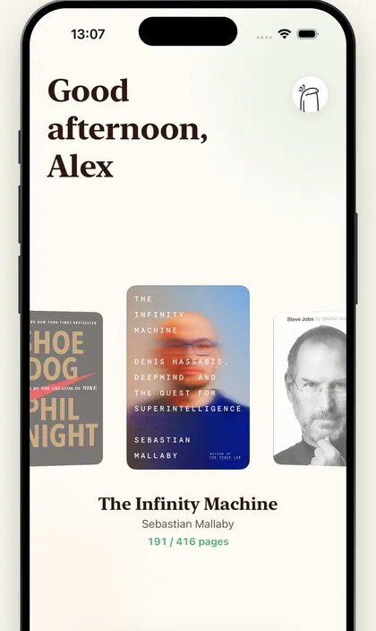
Reading tracker · iPhone & iPad
A calm companion for paper books, ebooks and audiobooks. Log a page in a second, keep your streak going, and watch your year fill a shelf.
iPhone and iPad · 9 languages
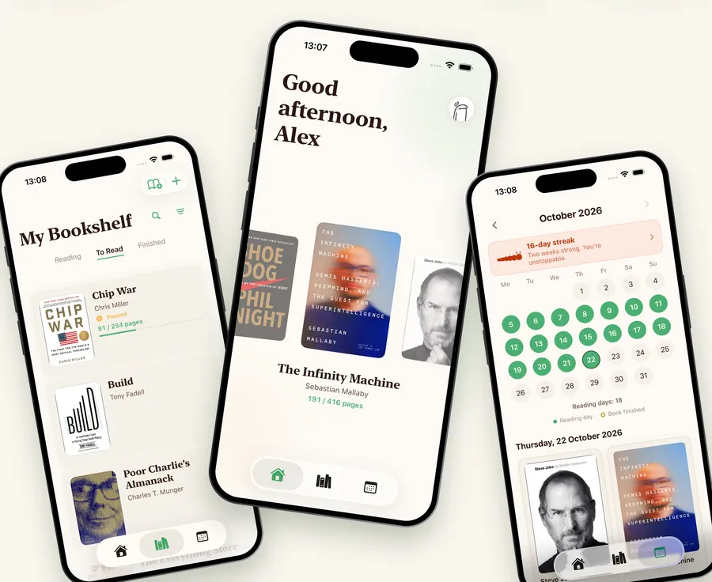
How it works
BookWorm keeps the part that matters in front of you: the book in your hands, today's goal, and the days you showed up.
01 · Home
The books you're reading wait as a row of covers. Tap one, it turns over, and you log your page. That's it.

02 · Goals and streaks
Set a daily goal in pages or minutes. Every day you reach it, the streak worm grows. Miss a day and tomorrow is a fresh start.
7 days in a row
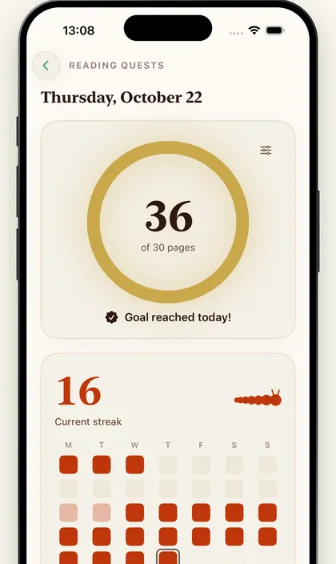
03 · Calendar and shelf
Every reading day lights up the calendar. Every book you finish earns a gold ring and a spine on your year's shelf.
Look inside
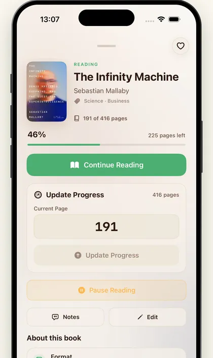
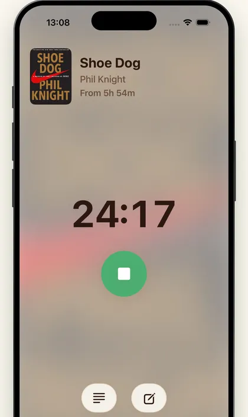
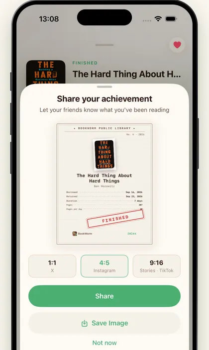
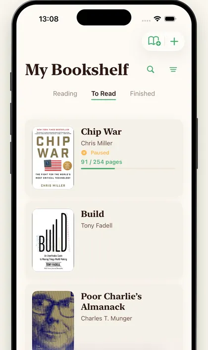
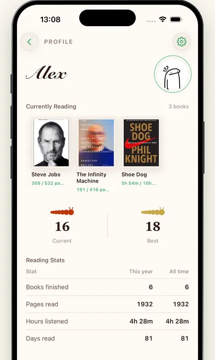
Find a book by title or author and its cover fills itself in. Pages for reading, hours and minutes for listening.
Start a session, pause it from the Lock Screen or Dynamic Island, and log your pages when you stop.
Write a thought at the page you're on. It stays with the book, page number and all.
Your current book and today's goal on the Home Screen and Lock Screen, one glance away.
Your library follows you to every iPhone and iPad signed in to your Apple Account. No new account to make.
English, Polski, Español, Français, 简体中文, हिन्दी, 日本語, 한국어 and Português.
Make it yours
Warm paper and ink. The everyday look.
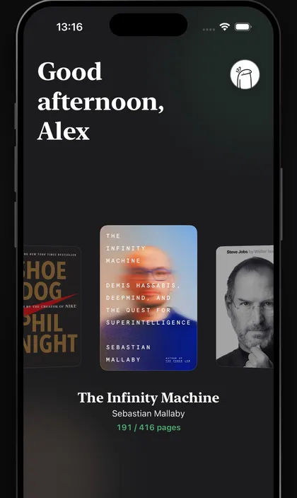
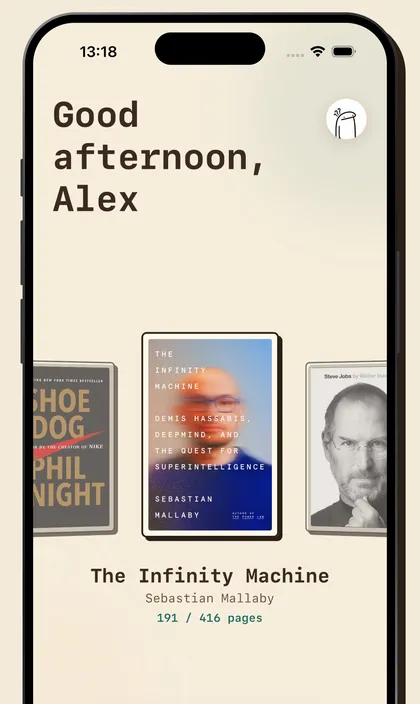
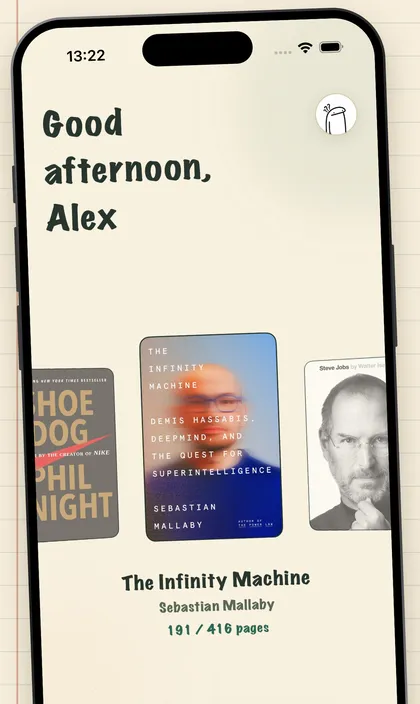
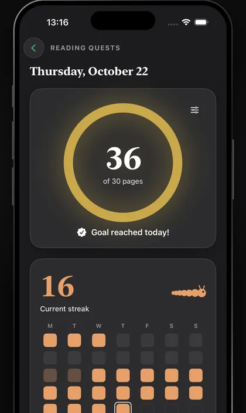
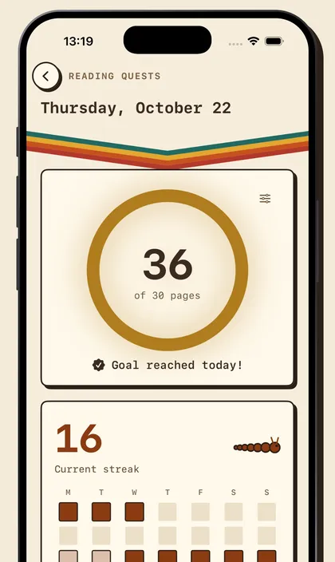
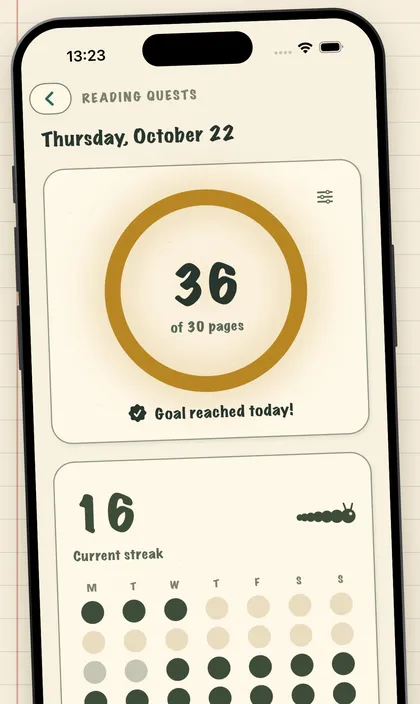
I built BookWorm for anyone who wants to finish the books they start: something gentle that notices the days you read, and never shames you for the days you didn't.
No ads, no account, nothing between you and your book.
Adam
BookWorm is made by one person. If it helps you read more, the tip jar inside the app keeps it growing.
Pick the book on your nightstand. BookWorm will keep the page.